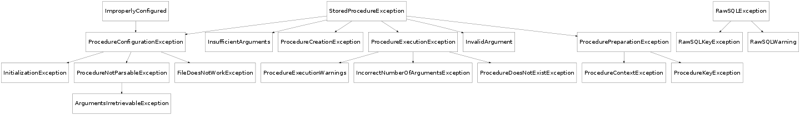

This module provides a wrapper around stored procedures for MySQL and generic raw SQL expressions in django. The former is handled by StoredProcedure, the latter by SQL.
There are situations in which raw SQL queries are necessary, when the ORM as provided by django is too restrictive to solve the problem at hand. Unfortunately, using raw SQL opens up a new batch of potential pitfalls. Below a small example of things that can go wrong, followed by a possible solution using SQL. The example is too small to be useful, but one familiar with large raw expressions might see the added value in the safity provided by SQL.
Suppose you have the model as below in the application locations,:
class Office(models.Model):
name = models.CharField(max_length = 100)
and the following model in administration.:
class Employee(models.Model):
name = models.CharField(max_length = 100)
office = models.ForeignKey('locations.Office')
Now suppose you want to count the number of employees per office.[#naive1]_ This can be done by means of the following code:
from django.db import connection
cursor = connection.cursor()
cursor.execute("""SELECT office.name, COUNT(*)
FROM
employee
, office
WHERE
office.id = employee.office_id
GROUP BY
office.id""")
print cursor.fetchall()
cursor.close()
Notice that many things are wrong with the fragment above. * you have no way of knowing whether the table Employee has database column employee (by default, it will not have this name at all); * the reference to Office from Employee might have a different database column than office_id; * some exceptions might be thrown * a warning may occur, and it may be written to stderr.
Using SQL, one can simply write:
print SQL("""SELECT e.[locations.Office.name], COUNT(*)
FROM
[administration.Employee] as e
, [locations.Office] as o
WHERE
e.[administration.Employee.office] = o.[locations.Office.pk]
GROUP BY
[locations.Office.pk]""")()
This performs the very same query. Instead of having to guess names in the database corresponding to models, they are automatically inferred. Moreover, they are auto-escaped whenever needed and Warnings are suppressed by default.
Footnotes
| [1] | Note that this example is not a very good motivator, as it can be solved satisfactory wholly within the ORM. See it merely as an illustration of the kind of problems one runs into when writing custom queries, not as an actual usecase. |
Wrapper for raw SQL statements.
This allows one to wrap raw SQL code, with the same name-reference system as in procedure.StoredProcedure.
| Parameters: |
|---|
Execute the SQL query
Note
Even though SQL is discussed first in the documentation, it was constructed much later and used more scarcely than StoredProcedure. It thus might have more bugs than its size would lead to believe.
When writing stored procedures, one is faced with the same difficulties as when writing raw SQL. Moreover, many things can go wrong when executing a stored procedure. It might be the case that you forgot to save the stored procedure to the database, or that you entered an incorrect number of arguments. One has to ensure that the stored procedure that you wrote down is actually stored in the database. In order to make this a little bit easier, one can use StoredProcedure.
Suppose you have a shop, and want to allow orders only of items that have a sufficiently large stock. This example is too easy to show the full potential of stored procedures, but is does nicely illustrate the use of StoredProcedure. Consider the models for the app shop
class OrderManager(models.Manager):
placeOrder = StoredProcedure(filename = 'shop/placeOrder.sql', results = True)
class Stock(models.Model):
name = models.CharField(max_length = 100)
amount = models.PositiveIntegerField()
class Order(models.Model):
product = models.ForeignKey(Stock)
amount = models.PositiveIntegerField()
objects = OrderManager()
The stored procedure that handles these orders is stored in the file ‘placeOrder.sql’, which contains the following.
CREATE PROCEDURE placeOrder
(
IN orderedAmount INT
, IN product CHAR(100)
)
MODIFIES SQL DATA
BEGIN
DECLARE stockID INT;
DECLARE stockAmount INT
SELECT
[shop.Stock.pk]
, [shop.Stock.amount]
INTO
stockID
, stockAmount
FROM
[shop.Stock]
WHERE
[shop.Stock.name] = product;
IF stockAmount >= orderedAmount THEN
INSERT INTO
[shop.Order]
(
[shop.Order.product]
, [shop.Order.amount]
)
VALUES
(
stockID
, orderedAmount
);
SET newOrderID = LAST_INSERT_ID();
UPDATE
[shop.Stock]
SET
[shop.Stock.amount] = [shop.Stock.amount] - orderedAmount;
WHERE
[shop.Stock.pk] = stockID;
SELECT stockAmount, newOrderID;
ELSE
SELECT 0,0;
END IF;
END;
When one now execute the code:
print Order.objects.placeOrder(product = "Tomato", orderedAmount = 10)
the stored procedure is called and the results are printed. Note that this call is made using keyword argument; StoredProcedure ensures that these come back in the right order. Were one to execute:
print Order.objects.placeOrder(products = "Tomatoes", orderedAmount = 10)
then InvalidArgument would be raised. When printing this exception, you immediately see the incorrect argument you used (arguments) and the ones that were available (argument, orderedAmount).
As described above, simply refer to tables, columns or primary keys respectively using [app.table], [app.table.column], [app.table.pk].
Database migrations, as provided for instance by South, are the ideal moment to push stored procedures to the database server. This is the default behavious. Each instance of StoredProcedure automatically is bound to the post_migrate signal. After a migration, the procedure is deleted from the database and re-created.
When executing a stored procedure, many things could go wrong. It is often useful to know this as early as possible, with as much information as possible. Every risky operation in StoredProcedure is wrapped in a try-catch block, yielding a new exception that is enriched with information about the procedure and hints towards solving it. Moreover, MySQL-Python can yield warnings which are directly printed to stderr. This is inconvenient in some situations, StoredProcedure allows you to automatically suppress these warnings, or raise them as exceptions by setting a flag.
There is no need to remember the order in which the arguments were given in the stored procedure. When calling StoredProcedure, the arguments are seen as the first few arguments to the underlying stored procedure, and the keyword arguments can be fitted in in any order. Mistakes like nameclashes, invalid arguments, too few arguments are handled gracefully by the exceptions TypeError, InvalidArgument and InsufficientArguments respectively.
Due to the above feature one needs to know the arguments to a specific stored procedure. These arguments can be provided by hand, but usually, they can be inferred automatically. If this is not possible, you will be notified of this by means of the exception ArgumentsIrretrievableException.
In order to be able to parse the procedure, it first has to be loaded from file. The file containing the procedure must be in the location as specified by filename. It is often useful to have code like:
import os.path, functools
SITE_ROOT = os.path.realpath(os.path.dirname(__file__))
IN_SITE_ROOT = functools.partial(os.path.join, SITE_ROOT)
in your settings.py file in django. When IN_SITE_ROOT is available, it will be used to make the filename absolute. When the file can not be found, FileDoesNotWorkException is raised.
Make a wrapper for a stored procedure
| Parameters: |
|
|---|---|
| Raises : | InitializationException in case one of the arguments does not satisfy the above description or FileDoesNotWorkException in case readProcedure() fails. If you can not differentiate between these errors in handling them (as would be most common), simply check for ProcedureConfigurationException, as this is a parent of both. |
This provides a wrapper for stored procedures. Given the location of a stored procedure, this wrapper can automatically infer its arguments and name. Consequently, one can call the wrapper as if it were a function, using these arguments as keyword arguments, resulting in calling the stored procedure.
By default, the stored procedure will be stored in the database (replacing any stored procedure with the same name) on a django-south migrate event.
It is possible to refer to models and columns of models from within the stored procedure in the following sense. If in the application “shop” one has a model named “Stock”, then writing [shop.Stock] in the file describing the stored procedure will yield a the database-name of the model Stock. If this model has a field “shelf”, then [shop.Stock.shelf] will yield the field’s database name. As a shortcut, one can also use [shop.Stock.pk] to refer to the primary key of Stock. All these names are escaped appropriately.
Moreover, one can use django templating language in the stored procedure. The argument context is fed to this template.
Call the stored procedure. Arguments and keyword arguments to this method are fed to the stored procedure. First, all arguments are used, and then the keyword arguments are filled in.
| Raises : | Nameclashes result in a TypeError, invalid arguments yield InvalidArgument and too few arguments give rise to InsufficientArguments. |
|---|
Renders the procedure and stores it in the database. See renderProcedure() and send_to_database() for details.
Read the procedure from the given location. The procedure is assumed to be stored in utf-8 encoding.
| Raises : | FileDoesNotWorkException in case the file could not be opened. |
|---|
Renders the stored procedure.
| Parameters: |
|
|---|---|
| Raises : | ProcedureContextException when the dynamic context’s construction yields an Exception. When a reference to a table or column within the raw procedure does not exist, ProcedureKeyException is raised. |
Whenever the context given on initialization is dynamic, it is computed here. First, the SQL will be treated as a django-template with as context the given context and ‘name’ set to the (escaped) name of the stored procedure. Next, references to tables and columns will be replaced. This depends on the library in use, which carries information about which tables exist. The default library in library almost always suffices.
Store the stored procedure in the database.
| Parameters: |
|
|---|---|
| Raises : | ProcedureCreationException in case of database errors. |
Note that we first try to delete the procedure, and then insert it. Take great care not to accidentally delete some other procedure which just happens to carry the same name, this is not prevented here.
Name of the stored procedure
Filename of the stored procedure
Arguments the procedure accepts
Whether the stored procedures requires a fetch after execution
The SQL code needed to call the stored procedure

Raised when we can not automatically infer the stored procedure’s arguments
Generic exception related to a stored procedure.
Subclasses should override the method _description(), which provides a description of the exception that occurred. This approach is taken to provide a uniform message for all exceptions, at least displaying the procedures’s name and filename.
| Parameters: |
|
|---|
Raised when the file in which the stored procedures should be contained could not be opened.
| Parameters: |
|
|---|
Raised when the database expected a different amount of arguments than we know of.
Exception that occurs during the execution of a stored procedure.
| Parameters: |
|
|---|
Raised when one of the arguments of the stored procedure’s constructor was incorrect.
| Parameters: |
|
|---|
Raised when an insufficient amount of arguments was provided to the stored procedure.
| Parameters: |
|
|---|
“Raised when invalid arguments were given to the stored procedure
| Parameters: |
|
|---|
Exception that occurs during the initialization of a stored procedure. Exceptions of this type are also ImproperlyConfigured exceptions, as django should flat out stop when they occur.
Generic exception related to a stored procedure.
Subclasses should override the method _description(), which provides a description of the exception that occurred. This approach is taken to provide a uniform message for all exceptions, at least displaying the procedures’s name and filename.
| Parameters: |
|
|---|
Raised when rendering the dynamic context raised an Exception.
| Parameters: |
|
|---|
Exception that occurs when storing the stored procedure in the database.
| Parameters: |
|
|---|
Raised when the stored procedure one tries to call does not exist in the database
Exception that occurs during the execution of a stored procedure.
| Parameters: |
|
|---|
Exception that occurs during the execution of a stored procedure.
| Parameters: |
|
|---|
Warnings that occurred during the execution of a stored procedure.
| Parameters: |
|
|---|
Raised when a certain reference did not exist.
| Parameters: |
|
|---|
Raised when the procedure could not be parsed
Generic exception related to a stored procedure.
Subclasses should override the method _description(), which provides a description of the exception that occurred. This approach is taken to provide a uniform message for all exceptions, at least displaying the procedures’s name and filename.
| Parameters: |
|
|---|
Raised when something went wrong while preparing the stored procedure for being stored in the database
Generic exception related to a stored procedure.
Subclasses should override the method _description(), which provides a description of the exception that occurred. This approach is taken to provide a uniform message for all exceptions, at least displaying the procedures’s name and filename.
| Parameters: |
|
|---|
Generic exception related to raw sql
Generic exception related to a stored procedure.
Subclasses should override the method _description(), which provides a description of the exception that occurred. This approach is taken to provide a uniform message for all exceptions, at least displaying the procedures’s name and filename.
| Parameters: |
|
|---|
List of all stored procedures registered at the library
Each stored procedure is registered with the library.
Registers a procedure with the libary.
Resets all procedures registered with the library in the database.